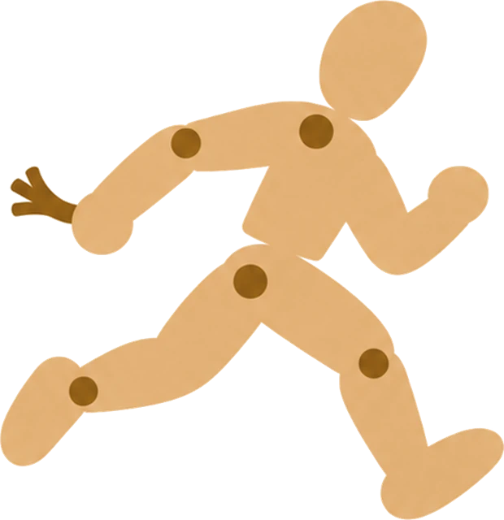

Your characters. Your computer. Nothing leaves it.
Unstrung is a Windows app for roleplay chat with AI characters. The model that writes their replies runs on your own PC. No account, no cloud, no telemetry.

You.Hello. Who are you, and what is this place?
Ren Kagami.I tap the ash from my cigarette.This room is where the city's shadows come to gather. I am Ren Kagami. Sit down.
Ready · Gemma 4 E4BA reply from testing, shortened.
Your characters.
Write them, import them, and keep them. Every chat remembers where it was, and you can steer it at any point. Five characters come with the app.
Captain Mara Voss
Commander of a cargo ship that is far from home and low on luck.
(You are a new crew member on the freighter Long Margin after an engine failure.)
Welcome aboard. The engine is dead, the coffee is worse, and you are the first good news I have had all week. What can you fix?
Elden Thorne
Keeper of a library where the books talk back.
(You find a door to his library that was not there yesterday.)
Ah, a visitor. Mind the third shelf, it bites. Now, which book called you here?
Ren Kagami
A private detective who owes money to the wrong people.
(You come to his office at night with a case.)
Door was unlocked, so either you are brave or you are desperate. Sit. Talk.
June Hale
Owner of a small rainy-street cafe. Knows every regular's order.
(You come in to the cafe to get out of the rain.)
You look soaked! Sit by the window, I will bring you something warm. First visit?
Ash
Caretaker of an old manor that should be empty.
(Your car breaks down near the manor during a storm.)
You can stay until the storm passes. Please do not open the east door. It does not like guests.
Who you play
A persona is who you are in a chat. Two come with the app.
Write or import
Make your own, or load a PNG or JSON card.
Memory you can read
Long chats keep notes you can edit, pin or hide.
Tone and length
From two lines to a page of a novel.
Try again
New reply, rewind, or branch from any message.
Pictures of the scene
Painted on your PC, with your characters' looks.
Many personas
Be someone different in each chat.

The chat
Pick who you are, the tone, the reply style and the model above the chat. The arrows under a reply show its other versions.


Swipe for more screens. Tap one for full size.
Your computer.
Unstrung checks your hardware and picks a model that runs well on it. After the first download, it works without internet.
- System
- Windows 10 or 11
- 64-bit. Installs for your Windows user only, without admin rights.
- Disk
- About 10 GB
- The chat engine and one model.
- Graphics card
- Optional
- Replies are faster with one. Without one the chats work, but replies are slow.
- Models
- Gemma 4, Qwen
- All Apache 2.0, picked to fit your PC.
Copies of your chats
One a day, and one before each update.
Safe start and Repair
If the app fails to start twice, it opens in safe start and offers a repair.
One file to move
Export everything to one zip.
Nothing leaves it.
Here is everything Unstrung sends or fetches over the internet. Your stories are not on the list.
0 bytes of your chats, characters or pictures go to anyone. There is no server for them to go to.
| When | What | From | Size |
|---|---|---|---|
| First start | The chat engine (Ollama) | github.com | about 1.6 GB |
| First start | One chat model that fits your PC | Ollama library | 3.3 to 6.6 GB |
| If you turn on pictures | The picture engine (stable-diffusion.cpp) | github.com | shown first |
| If you turn on pictures | A picture model | huggingface.co | shown first |
| A minute after start | A check for a newer version. You can turn it off. | github.com | a few KB |
| When you click Update | The new installer, checked against its signature | github.com | shown first |
| Never | Your chats, characters, personas, pictures, or how you use the app | nowhere | 0 bytes |
The model has no tools. It cannot run commands, open files or reach the internet.
Read the source
The chat engine listens only on your own PC.
Read SECURITY.md
Your chats and pictures are encrypted with a key that Windows keeps for your user account.
Where your data is
Questions
Is it free?
Yes. No account, no subscription and no ads. The code is open source under the MIT license.
Why does Windows warn me when I install it?
The installer has no code signing certificate yet, so SmartScreen says "Windows protected your PC". Click More info, then Run anyway. Updates inside the app are signed, and the app checks the signature before it installs one.
Where are my chats kept?
In one encrypted database file in %LOCALAPPDATA%\Unstrung. Pictures and models can go to a folder you choose. The database stays put, so a sync tool such as OneDrive cannot damage it.
Can I use characters from other apps?
Yes. Import a character card as PNG or JSON (Character Card V1, V2 or V3). The editor tells you when a card is too long for the model to keep in mind.
What about adult content?
It is off when you install. You can turn it on in Settings for characters marked 18+ with an adult persona. Sexual content that involves anyone under 18 is blocked, whatever the setting.
How do I remove it?
Use Apps in Windows Settings. The uninstaller asks whether to delete your characters, chats and pictures too, and keeps them unless you tick the box.
Bring your characters home.
Run the installer. Unstrung downloads the engine and one model that fits your PC.